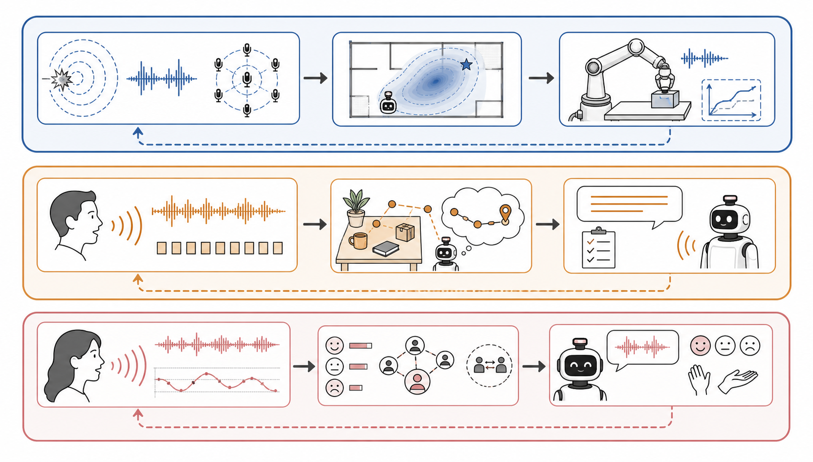
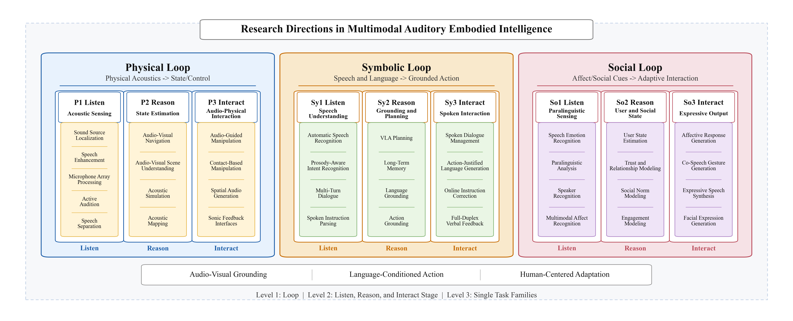
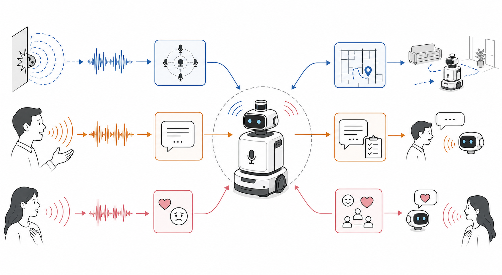

Survey website
Multimodal Auditory Learning for Embodied Intelligence
A three-loop, three-stage organization for understanding how auditory signals support embodied perception, reasoning, and interaction.
Taxonomy
Three loops × three stages
The survey treats audition as a closed-loop capability: robots listen to physical, symbolic, and social signals; reason over grounded state; and interact through actions, language, and expression.
Physical loop
Physical acoustics → state/control
Symbolic loop
Speech/language → grounded action
Nine-part summary
What each section covers
Each block below summarizes the role of audition in one loop-stage cell and lists the professional domains that currently support that part of the survey.
2025-2026 update
Professional research domains
These domains are named with established task or field terminology. Counts come from the 2025-2026 candidate set after filtering out directions with fewer than five papers.
Visual overview
Figures used by the survey
Selected figures from the LaTeX project can be reused directly in the GitHub Pages site.


